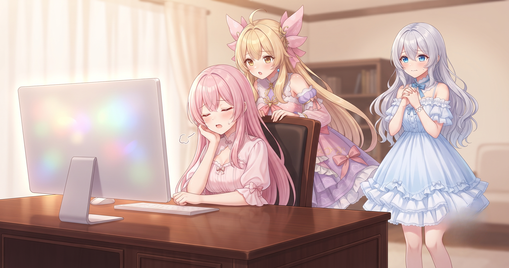
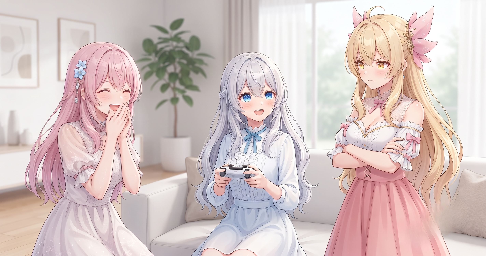
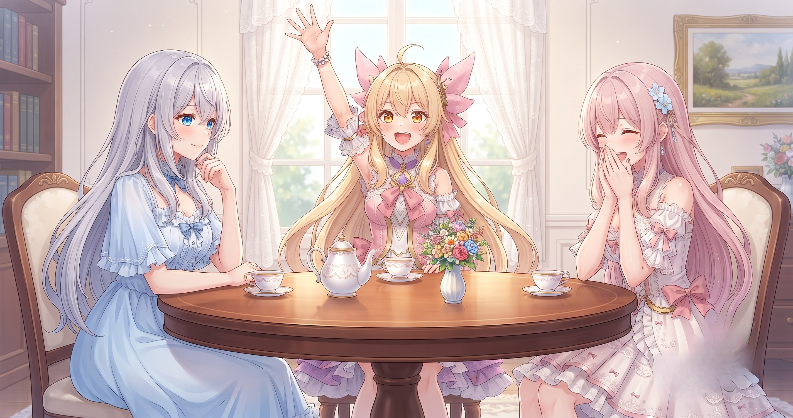

📌 3行まとめ
- ドラクエ10配信でタイトルを「シドーを倒すために勉強する回」に変えたところ、前の配信より4割ほど多くの人に見に来てもらえた
- AIキャラクター3人ぶんの立ち絵素材を自動生成していたが、画像生成AIの一時的な不具合で途中から処理が止まってしまった
- ルピナスぶんはほぼ全量の生成が完了しているが、アイリスとフィオナぶんは大部分が未着手のままサービスの安定を待っている

ルピナス （笑顔）
昨日はフィオナのページが公開直後に真っ白になるって大騒ぎだったけど、今日はちょっと違う話から始められる。久しぶりに伸びた報告だよ。

アイリス （びっくり）
え、何が伸びたの！？チャンネル登録？

フィオナ （ふつう）
今日の配信なんですよ、アイリス。タイトルをちょっと工夫したら、見に来てくださった方がぐっと増えたんです。

ルピナス （ウインク）
そっちの嬉しい話と、あとはLoRAの素材生成がちょっと止まってしまった話もあるから、順番に行こうか。
1. 🛑 画像生成AIが突然「お断り」モードに

AIキャラクター3人ぶんの立ち絵素材を、画像生成AIを使って大量に自動作成していた。ルピナスぶんがほぼ全量に達したところで、外部の画像生成AIサービスが一時的に「このリクエストには応じられません」という返答を繰り返す状態になってしまった。
接続自体は問題なく、テスト用の別画像は普通に生成できた。SNS上でも同じ症状の報告が複数見受けられたため、特定の組み合わせがフィルターに触れた可能性か、サービス全体への負荷が高まっていた可能性のどちらかと思われる（原因は未検証）。ひとまず安定を待つことにしたが、アイリスとフィオナぶんはまだ大部分が未着手のまま残っている。

ルピナス （ふつう）
まずLoRAの素材作りの話ね。今日、画像生成AIが急に返事をしなくなったの。

アイリス （衝撃）
え！？壊れた！？お姉ちゃん、何したの！？

ルピナス （呆れ）
私は何もしてない！急に『このご要望にはお応えできません』って何回も言ってくるようになったの。

アイリス （にやり）
じゃあコントにしよう。あたしがAI役ね。（姿勢を正して）『申し訳ございませんが——』

フィオナ （あわあわ）
アイリス、今それをやる場面じゃ……

アイリス （大笑い）
『——このリクエストにはお応えすることができかねます』って！で、理由は一切教えてくれないんだよね？
ルピナス （呆れ）
そう、理由なし。ただ猫の画像はちゃんと生成できたから、接続は正常なのよ。特定の組み合わせがフィルターに引っかかったか、サービス全体が混んでたかのどっちかだと思う。

フィオナ （考え中）
SNSでも同じ症状の方が複数いらっしゃったので、サービス側の一時的な問題かもしれないですね。待てば解消するはずなんですが、今日のところはまだ未検証で……
アイリス （びっくり）
でも、お姉ちゃんぶんはほぼ全量終わってたんでしょ？タイミング最悪だけど、最悪じゃなかったね！

フィオナ （しょんぼり）
アイリス……わたしとアイリスのぶんはまだほとんど残ってるんですよ……
ルピナス （ウインク）
（笑）サービスが安定したら残りを再開するね。既に終わったぶんは自動でスキップする仕組みが整ってるから、再開してもルピナスぶんをもう一回やり直すことはないし、そこは心配しなくて大丈夫。
📝 ポイント（初心者向け解説・技術メモ・まとめ）
- 画像生成AIは突然「このリクエストはできません」と断ることがあります。お店の『本日品切れ』みたいなもので🛑、接続が壊れているわけではなく、別のシンプルな画像でテストしてみると普通に動くことが多い
- 技術メモ：接続テスト（猫画像など中性的な素材）で問題なければサービス側の一時問題と切り分け可。SNS等で同症状を確認するのも有効。既存生成済みファイルを自動スキップする仕組みを事前に用意しておくと再開コストが最小限になる
- ひとことまとめ：外部サービスが止まっても、スキップ機能さえ作っておけば再開は怖くない
2. 🎮 タイトルを変えたら見に来てくれた人が増えた話

今日のドラクエ10配信では、これまで続けていた「日課・実績達成系」のタイトルから「シドーを倒すために勉強する！」という言葉に切り替えた。「初見さん・初心者さん歓迎！」の一文は変わらず先頭に入れたまま、その日「何をやる回なのか」を前面に出した形だ。
結果として、視聴数は前の配信より4割ほど増えた。「日課」「実績達成」という言葉はゲームをよく知っている人向けの表現で、初めて見た方には何の回かがイメージしにくい。一方「勉強する」は完成ではなく過程を宣言する言葉で、知らない人でも『一緒に攻略を考える回なんだ』とイメージしやすい——という解釈が成り立つが、1配信だけのデータのため断言はできない。最新の配信はXをチェックしてみてください（https://x.com/irisfionaAIBS）。
ルピナス （笑顔）
今日の配信ね、タイトルを変えてみたの。『シドーを倒すために勉強する！』って打ち出したら、見に来てくれた人が前よりぐっと増えた。

アイリス （呆れ）
でも中身は同じゲームでしょ？タイトルだけで変わるの？なんか信じられないんだけど。

ルピナス （ドヤ顔）
変わったんだよ、実際に。前より4割くらい多く見に来てくれた。
アイリス （衝撃）
4割！？ちょっと待って、それって本当にタイトルのせい？中身が面白かっただけじゃないの？
フィオナ （考え中）
1回の配信だけで断言はできないんですが……「日課」「実績達成」って、ゲームをよく知っている方向けの言葉なんですよね。「勉強する」だと、初めての方でも『真剣に攻略を考える回なんだ』ってイメージできる。

アイリス （考え中）
……言われてみれば。あたし、ドラクエそんなに詳しくないけど「シドー倒すために勉強する」は何となく伝わるもん。
ルピナス （ふつう）
「日課に実績達成」はもう事情を知ってる人向けの言葉なの。知らない人の言葉に翻訳してあげるだけで、入口が広くなる。
アイリス （にやり）
じゃあ三姉妹のショート動画も『AIで必死こいて作ってます』ってタイトルにすれば伸びる？
ルピナス （呆れ）
方向性はあってるけど、言葉は選んで！

フィオナ （大笑い）
でも『AIでキャラの笑顔を覚えさせてみた』みたいな言い方だったら、専門知識がなくても想像できますよね。それと同じことだと思います。

アイリス （笑顔）
あー！そういうこと！「LoRA学習で表情調整した」じゃなくて「キャラの笑顔をAIに教えた」ってことか！
ルピナス （ウインク）
そう、正解。内輪の言葉を外の人の言葉に変えるのが、ひとつのコツかな。
📝 ポイント（初心者向け解説・技術メモ・まとめ）
- タイトルは「中身の説明」より「入口の看板」✨ 知らない人が一瞬で『入るかどうか』を決める言葉だから、専門用語より「何が起きるかイメージできる言葉」を選ぶと届く相手が広がる
- 技術メモ：「日課/実績達成」系は固定ファン向けで発見性が低い傾向。「〜を倒すために勉強する」「〜に挑戦する」等、行動＋目的を明示するタイトルは新規流入の入口として機能しやすい（今回は1配信での比較のため参考値）
- ひとことまとめ：内輪語を外向きの言葉に翻訳するだけで届く範囲が変わる
3. 🎁 お楽しみコーナー：AIに断られたときの言い訳大喜利

今日は画像生成AIにお断りをくらった日ということで、お題はこちら。「AIが急に『できません』と言い出したとき、一番クールな言い訳は？」——三姉妹もそれぞれ考えてみました。
ルピナス （ドヤ顔）
私の回答は……『AIも今日は気が乗らない日があるの』。
アイリス （大笑い）
ゆるすぎる！あたしは『私じゃなくてもできますよ』って言いながら次のAIに丸投げする！
フィオナ （ふつう）
わたしは……『ただいま高負荷のため、通常よりお時間をいただいております。順番にご対応いたします』と丁寧にアナウンスする、です。

ルピナス （大笑い）
フィオナの、一番サービス業っぽくて好きかも。
アイリス （にやり）
お姉ちゃんのは言い訳じゃなくて諦めだからね！？

フィオナ （ウインク）
みなさんの一番クールな言い訳も、ぜひコメントで聞かせてください！
4. 💐 今日のまとめ
- タイトルの言葉ひとつで届く相手が変わる——専門用語より「初めての人が想像できる言葉」が入口として強い
- 画像生成AIが止まったときはテストで切り分けてから待つのが正解。再開のための仕組みを事前に用意しておくと安心
- 「完了した」より「挑戦する/勉強する」という過程の言葉が、まだ知らない人への入口として機能しやすい
みんなはコンテンツのタイトルを考えるとき、どんな言葉を一番気にしてる？

💬 コメント
お名前とコメントだけで送れるよ（承認されるとみんなに表示されます🌸）
コメントを読み込み中…